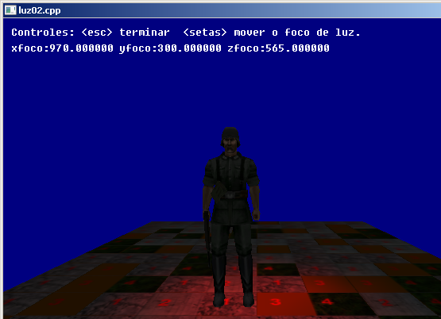

Já vimos que a DarkGdk adiciona uma luz default na sua cena, mas para melhores
efeitos você pode adicionar e configurar novas luzes no ambiente criado.
Na ilustração acima, o soldado está iluminado por uma luz vermelha. A luz está
posicionada logo acima e atrás de sua cabeça e aponta para o entorno de seus pés.
dbMakeLight(nLuz);
Esta função adiciona uma luz (nLuz) na cena.
Ex.:
dbMakeLight(2);
-------------------------------------------------------------------------------
void dbSetSpotLight ( int iLight, float fInner, float fOuter );
dbSetSpotLight(nLuz, nConeInterno, nConeExterno);
Esta função configura a luz criada como um holofote (spot).
Os argumentos nConeInterno e nConeExterno determinam respectivamente
a área forte e a área fraca aonde luz começa a esmaecer.
Ex.:
dbSetSpotLight(2, 0, 90);
-------------------------------------------------------------------------------
dbColorLight(nLuz, nCor);
Esta função configura a luz indicada com a cor indicada.
Ex.:
const int vermelho = 0xFF0000;
dbColorLight(2, vermelho);
-------------------------------------------------------------------------------
dbPositionLight(nLuz, xpos, ypos, zpos);
Esta função reposiciona a luz indicada (nLuz) na posição especificada
(xpos, ypos, zpos). Você pode utilizar vários valores para a posição
para criar animação de luz.
Ex.:
dbPositionLight(2, xfoco, yfoco + 250,zfoco);
-------------------------------------------------------------------------------
dbPointLight(2, xfoco,yfoco,zfoco);
Esta função focaliza a luz indicada no ponto indicado (xfoco, yfoco, zfoco).
Esta função funciona apenas com a luz do tipo spot ou direcional.
dbPointLight(2, xfoco,yfoco,zfoco);
-------------------------------------------------------------------------------
dbSetNormalizationOn();
Esta função normaliza as 'normais' dos objetos 3d para receberem adequadamente
a iluminação. A normal é um vector, linha ou raio que indica o lado da
superfície que deve ser iluminado. Se este aspecto estiver invertido o
objeto aparece com pontos escuros aonde devia ser iluminado.
Ex.:
dbSetNormalizationOn();
Veja agora nosso programa exemplo:

// luz02.cpp
// Esse programa mostra como manipular uma luz
#include "DarkGDK.h"
#include "windows.h"
// Protótipo das funções
void initsys(); // inicializa o sistema
void teclado(); // Interpreta o teclado
void texturizar(); // Texturiza a matrix
// Variáveis de trabalho
int terminar = 0;
float xfoco = 970, yfoco = 300, zfoco = -185;
const int vermelho = 0xFF0000;
// ----------------------------------------------------------------------------
void DarkGDK ( void ) {
// Começo da aplicação DarkGdk
// Carrega textura do terreno
dbSetWindowTitle("Aguarde...");
dbLoadImage ("c:\\gameprog\\gdkmedia\\bitmap\\textura2x2.bmp",1);
// Carrega e texturiza objeto
dbSetDir ("c:\\gameprog\\gdkmedia\\Modelos\\German");
dbLoadImage ("german.dds",2);
dbLoadObject ("H-German-Idle.x",1);
dbTextureObject (1,2);
// Inicializa o sistema
initsys();
// O objeto 10 é nosso cursor do apontamento da luz
dbMakeObjectSphere(10,10);
//O objeto 11 é nosso cursor da posição da luz
//dbMakeObjectSphere (11,10);
// Prepara o terreno
dbMakeMatrix (1,2000,10000,10,50);
dbPrepareMatrixTexture (1,1,2,2);
texturizar();
// Posiciona o soldado na cena
dbPositionObject (1,970, 300, -185);
dbScaleObject (1,12000,12000,12000);
dbFixObjectPivot(1);
// Coloca nosso cursor na cena
dbPositionObject (10,xfoco,yfoco,zfoco);
// Objeto 11: Marcador da posição da luz de
// dbPositionObject (11,xfoco,yfoco+250,zfoco);
// Esconde a luz padrão
dbHideLight(0);
// Use esta função para que os modelos 3D sejam iluminados corretamente
dbSetNormalizationOn();
// Criação e configuração de luz
dbMakeLight(2);
dbSetSpotLight(2, 0, 90);
dbColorLight(2, vermelho);
dbPositionLight(2, xfoco, yfoco + 250,zfoco);
dbPointLight(2, xfoco,yfoco,zfoco);
// Posiciona camera na cena
dbPositionCamera (1005, 475, -600);
dbSyncOn();
// Looping principal
while ( LoopGDK ( ) ) {
if (terminar == 0) teclado();
dbSync ( );
if (terminar == 1)
{
dbDeleteImage (1); dbDeleteMatrix (1);
dbDeleteObject (1);
return;
} // endif
} // fim do while
return;
} // fim da função: DarkGDK
// ----------------------------------------------------------------------------
void initsys() {
// Esta função inicializa o sistema
dbSyncOn( );
dbSetWindowTitle("luz02.cpp");
dbSetTextTransparent();
dbDisableEscapeKey();
dbSyncRate(60);
} // initsys().fim
// ----------------------------------------------------------------------------
// texturizar() - Aplica aleatóriamente a textura na matrix
void texturizar() {
int linha, coluna;
for (coluna = 0; coluna < 10; coluna++)
{
for (linha = 0; linha < 50; linha++)
{
int tile = dbRnd(4) + 1;
dbSetMatrixTile (1, coluna, linha, tile);
} // linha
} //coluna
dbUpdateMatrix (1);
} // texturizar().fim
// ----------------------------------------------------------------------------
// teclado() - Lê o teclado e executa comandos do usuário
void teclado() {
char sinfo[255];
if (dbEscapeKey()) terminar = 1;
// Movimentação do ponto de foco da luz
if (dbUpKey())zfoco += 5;
if (dbDownKey()) zfoco -= 5;
if (dbLeftKey()) xfoco -= 5;
if (dbRightKey()) xfoco += 5;
if (dbKeyState(201)) yfoco += 5;
if (dbKeyState(209)) yfoco -= 5;
// Mostra informações na tela
dbText (10,10, "Controles: <esc> terminar \t <setas> mover o foco de luz.");
sprintf (sinfo, "xfoco:%f yfoco:%f zfoco:%f ", xfoco, yfoco, zfoco);
dbText (10,30, sinfo);
// Focaliza luz e marca posição do foco
dbPositionObject(10, xfoco, yfoco, zfoco);
dbPositionLight(2, xfoco,yfoco + 250,zfoco);
dbPointLight(2, xfoco,yfoco,zfoco);
} // teclado().fim